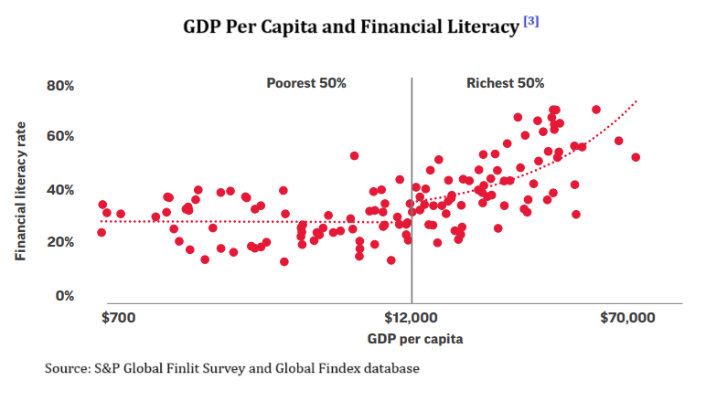

The number of DEMAT account holders in Nepal have reached approximately 58 lakhs in late June 2023 according to CDSC database. That is every 1 in 5 individuals has DEMAT account assuming 1 DEMAT account per person. This is a great achievement for a country like Nepal because more and more people are able to involve in the capital market. However, there arise a serious question. Does this increase in the DEMAT accounts indicate the rise in financial literacy of Nepalese or are people just openign the DEMAT accounts because someone told them IPOs are easy money? This essay revolves around this this particular question by attempting to explain the meaning of financial literacy, the need of financial literacy in changing economic scenario and policy frameworks necessary for improving the financial literacy situation for better financial resilience.
What is financial Literacy?
Simply, financial literacy means the ability of an individual to manage his/her finances. It represents the level of aptitude in understanding personal finance; awareness and knowledge of key financial concepts required for managing personal finances and is generally used as a narrower term than financial capability (World Bank, 2014). Financially literate people have the capacity to make rational financial decisions that is likely to benefit themselves, their society and the economy as a whole. It has three major components: knowledge, attitude, and behaviour (OECD/INFE, 2022). Financial knowledge means the knowledge, information about different financial products and services. Financial attitude are the individual characteristics that take the form of tendencies towards a financial practice or action and shows the inclination or likelihood of a person to undertake a behaviour (Ramirez-Montoya, 2017). Financial behaviours are the actions one need to exhibit to achieve financial well-being that include: (i) managing their money, (ii) researching and seeking knowledge about financial decisions, (iii) planning and goal setting and (iv) follow-through the first three actions (Long, 2023).
Status of Financial Literacy
S&P Global Financial Literacy Survey 2014 is the most comprehensive global measurement of financial literacy till date which measured the level of financial literacy based on four financial concepts:;(i) risk diversification, (ii) inflation, (iii) numeracy[1] and (iv) interest compounding. For this survey, 150,000 adults in over 140 countries were interviewed. The survey found that only 33% of adults worldwide are financially literate of which 35% of men and 30% of women are financially literate. Women trail men in financial literacy in both major advanced and emerging countries. Risk diversification is the least understood topic among the four mentioned above. Though account holders are financially savvy, only 36% of account-holding adults are found to be financially literate. For richer countries, high economic development is tied with high financial literacy. However, the relationship doesn’t hold true in case of poor countries.  Young adults are found to be more financial literate than old age people in both advanced and emergin economies. Further, financial literacy is found to be have positive relationship with math scores of young population except in Portugal, Vietnam, South Korea and China. Scandinavian countries are found to have higher financially literate population. Norway, Denmark and Sweden had 71% of adults financially literate while the USA had only 57% adults financially literate. In the SAARC region, Bhutan has the highest financially literate adult population i.e., 54% followed by Maldives (35%). Nepal has only 18% of adult financially literate while India has 24%.
Nepal Rastra Bank’s financial literacy survey[2] conducted in 2022 found that 57.9% of Nepalese of age above 18 years are financially literate which is way above than that found by Global Finlit Survey 2014. Bagmati province has the highest while Madhesh province has the lowest financially literate population. Males are found to be more financially literate than females by 7.5%. The gender gap in financial literacy score has been found in all provinces with the gap being the widest in Madhesh and Sudurpaschim province. Likewise, Younger people (18-30 years) are more financially literate than older ones (above 60 years).
Financial literacy in changing economic landscape
Government Perspective
First significance of the financial literacy to an economy could be to reduce the systemic failure of the financial system. Aftermath the financial crisis of 2008, countries globally gave huge importance to the financial literacy. It was because countries concluded that low level of financial literacy could be associated with the systemic failure of whole market. Additionally, financial literacy can support the securities market regulators by identifying and reporting frauds and scams (OECD/INFE, 2017). In 2007, the mortgage-backed securities (MBS)[3] were hotcake in the financial market. Both retail and institutional investors had little knowledge on this new investment instrument leading to the mis-selling of the MBS. When borrowers of housing loans started to default, the value of MBS dropped quickly leading to the collapse of entire financial system. This event depicts the importance of financial literacy for the stability of entire economy.
Secondly, financial literacy can be crucial to raise required investments for the development of an economy. The share of retail investors in global assets under management has reached 51% in 2021 and expected to reach 61% by 2030 according to the strategic consulting firm Indefi. This means the role of retail investors in global investment is going to be huge in the future. Hence, countries should not underestimate the role of retail investors in economic development. Further, the recent events like global COVID-19 pandemic followed by Russia-Ukraine have shown that it is not reliable to completely depend on foreign investments for economic growth and prosperity.[4] Why? Because foreign investors are more sensitive to geo-political tensions or any other misfortunes. This means they could pull out their investment at any time. The growing trend of deglobalization fueled by supply chain disruptions post COVID pandemic could be major evidence. This event should encourage the government to increase the participation of investors in capital market by boosting their confidence through financial literacy. At the same time encouraging local investors participation in domestic capital markets can enhance the depth and make them less dependent on external factors and more resilient to global financial shocks (International Monetary Fund, 2014).
Thirdly, financial literacy can be crucial to address the risk taking by retail investors. Some investors have excessive risk-taking behaviour who invest in capital market without any precautions. While investors on other spectrum are excessive risk-averse which means they are less likely to participate in capital market or only prefer long-term investment which has low returns (OECD/INFE, 2017). Financial literacy can be vital in addressing this issue by giving confidence to risk-averse investors and educating the need of precautionary measures to the risk-takers.
Individual Perspective
From individual perspective, financial literacy plays a crucial role to enhance the financial well-being of individuals. The increasing complexities of financial instrument, inflation and increased risks due to geo-political tensions and climate change have increased the need for financial literacy for individuals for their financial resilience and well-being (Lusardi & Messy, 2023). More specifically, financial literacy can enhance the financial well-being in following ways: (i) control the excessive spending habit, (ii) explore different financial instruments for investments, (iii) diversify the portfolio for risk diversification, (iv) better financial planning to set budget aside to meet the current financial needs while keeping certain portion for future contingencies and investments.
Financial innovations and financial literacy
In the past decade the technological innovation has accelerated in an unimaginable speed. Rapid technological innovation has supported every aspect of the economy. One key product of technological development is financial innovation.[5] Individuals are able to use different financial products and services. However, the problem is that the speed of development of complex financial products and services is way faster than people could understand these financial products and services. The result is complexities in making financial decision have increased multiple folds. People with low financial knowledge are subject to greater risk of “financial fraud”. The rationale is that these people have low knowledge on any financial products and services and are likely to be misled to purchase those products and services.
One key example of mis-selling of financial products can be of NFT.[6] In early 2021 NFT became so popular worldwide. Especially digital artworks gained huge attention. For example, Beeple’s NFT artwork “First 5000 days” was sold for $69 million at auction house Christie’s. People with no knowledge on the underlying mechanism and technology of NFTs followed the NFT trend. They invested heavily in NFTs with celebrity endorsement hoping huge ROI. However, the NFT trend didn’t last long. NFT market trading volume of $24.7 billion in 2022 is projected to shrink by more than 50% in 2023 according to chainalysis. This means people are losing huge sums of money. This recent event depicts the necessity of financial knowledge. One must note that the mis-selling not only affects those who face direct losses but also reduces the confidence of wider population on the whole market reducing investments and liquidity (OECD/INFE, 2017).
The case of Nepal
Though the importance of financial literacy from the perspective from the individual and government has been discussed in earlier section, this section is focused on the need for financial education in Nepal in the light of growing interest toward capital market. In recent years, there is massive interest towards the capital market in Nepal. It is evident by the fact that the number of DEMAT account holders have reached around 58 lakhs by June 2023 as per CDSC database. Additionally, there is over-subscription of every IPOs that has been issued in the last three years. This is an exciting news for companies trying issue IPO. But the question is “were these companies so financially strong with good growth opportunities that they were completely subscribed? Or was it just a FoMo[7]?” Nepalese have the perceptions that primary market is risk-free and no matter the investment, they are likely to earn good return. This is completely false perception which is major evidence for low financial literacy among Nepalese investors.
Another key evidence of low financial literacy among Nepalese investors is that during the boom of NEPSE in 2020/21 rally, there were companies whose stock price had been overvalued multiple folds even though their EPS was low and had low earning potential. Majority of the investor’s investment decision were based on the rumours instead of their own research. These kind of irrational behaviour of investors can directly affect their financial resilience and well-being. Furthermore, irrational behaviours of investors can lead to systemic failure of capital market because investors with low financial literacy invest haphazardly and they don’t scrutinize the companies’ actions as much as they should.
Notes
[1] Numeracy has been defined as simple interest. For more information, see https://gflec.org///wp-content/uploads/2015/11/ALPrez.pdf.
[2] The plot has been taken from Lusardi & Klapper (2015) presentation of S&P global finlit survey 2015.
[3] MBS is a type of asset backed security collateralized by pool of mortgages.
[4] It is to note that author completely believes on the strong role of FDI for development. However, the author strongly supports the idea of locally pooled investment more than FDI.
[5] Financial innovation is the process of development of new financial products, process, services.
[6] NFT stands for non-fungible tokens that are crypto assets used to certify ownership and give authenticity to a digital file that can be image, video, or text. For more information, see https://101blockchains.com/history-of-nfts/
[7] FoMo stands for fear of missing out.